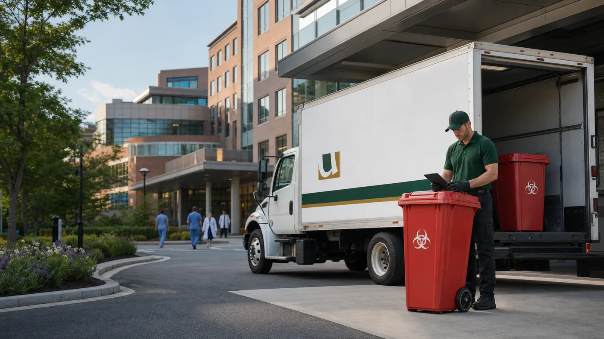
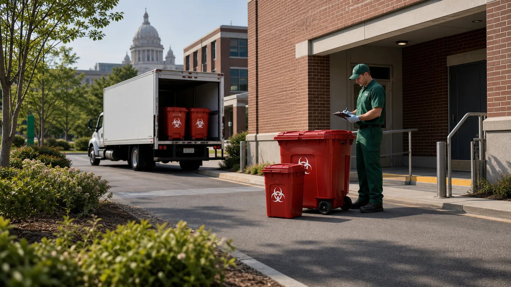

Healthcare facility waste
Pickup planning for red bag waste, sharps, containers, manifests, and service records.

Location
United Medical Waste supports Providence healthcare facilities, universities, clinics, and labs with regulated waste pickup planning, sharps support, pharmaceutical waste review, training support, and documentation..
Service Review
Share the basics and the team will help review pickup, containers, records, training, and waste stream needs.

Local Services
United Medical Waste supports Providence-area facilities with pickup planning, container setup, sharps management, pharmaceutical waste review, training support, and service records.
Programs are built around your facility type, waste volume, storage space, pickup frequency, and documentation requirements.
Pickup planning for red bag waste, sharps, containers, manifests, and service records.
Waste stream review and pickup coordination for health centers, labs, and research-related regulated waste.
OSHA, DOT, RCRA, HIPAA, and Bloodborne Pathogens topics for staff handling regulated waste.
Service Planning
Each location has different routing, storage, access, and documentation needs. Use these points as a starting point when reviewing service for your facility.
Programs are planned with Rhode Island medical and infectious waste requirements in mind.
Pickup plans can account for multiple buildings, department access, and varied waste streams.
Sharps and regulated waste containers can be placed where staff generate waste.
Service records can support internal reviews and inspection preparation.
Regulatory Context
Rhode Island regulates medical and infectious waste through 250-RICR-140-15-1 and related DEM program guidance. Facilities should review generator registration, storage, packaging, treatment, transporter, and recordkeeping duties before changing service.
Local Coverage
United Medical Waste supports Providence-area healthcare facilities with pickup planning, containers, staff training support, and organized service records. Include your facility type, location, primary waste streams, and current pickup schedule when requesting service.
Get a QuoteLocal Reading
Compliance reading curated for your region.
Guide
Medical waste disposal in Rhode Island: registration, containers, pickup, and recordkeeping steps for clinics, dental offices, labs, & surgery centers.
Guide
Connecticut healthcare facilities must follow DEEP biomedical waste regulations for packaging, transport, treatment, and documentation. Get a free audit.
Guide
Learn how medical waste disposal in New England works, including state requirements across MA, CT, RI, ME, NH, and VT, plus OSHA rules.
Guide
New England waste disposal is a collective effort between each of the states by following these regulations in order to keep the area safe and clean.
Common Questions
Rhode Island's regulated medical waste is overseen by the Department of Environmental Management (DEM), Office of Land Revitalization and Sustainable Materials Management in Providence. The program covers generation, storage, transport, treatment, and disposal under 250-RICR-140-15-1.
Yes. Generators must register with the DEM and obtain a generator (shipper) registration number before legally shipping regulated medical waste off-site for treatment or disposal. Your licensed hauler will need this number to complete your tracking form.
Rhode Island sets a storage limit of 50 pounds OR the average quantity generated over 7 consecutive calendar days - whichever allows storage for the longer period. Storage areas must be secured from unauthorized access and protected from flooding and adverse weather.
Rhode Island requires segregation into distinct categories: sharps and unused sharps (including residual fluid), cultures and stocks, blood products, pathological waste, and spill cleanup materials. Each category has its own container requirement.
Rhode Island regulations require sharps be rendered generally unrecognizable before final disposal. All sharps must be ground to less than one-half inch, and the majority of other waste must be shredded to less than 1 inch. This destruction step is completed at a licensed destruction facility, not at your business.
Yes, with limited exceptions. Any generator transporting regulated medical waste off-site for treatment must prepare a Rhode Island Medical Waste Tracking Form. Healthcare professionals and veterinarians transporting household-generated sharps back to their office may do so without a form, provided waste is properly packaged.
Rhode Island allows digital tracking forms as a functional equivalent to paper forms - but digital formats must be approved by the Department in writing prior to use. Your hauler should have confirmed DEM approval for any digital documentation they offer.
Yes. Rhode Island is one of 26 states covered entirely by the federal OSHA program, meaning all federal OSHA standards - including Bloodborne Pathogen rules for sharps handling, containers, and employee training - apply directly. Your program must satisfy both DEM environmental rules and OSHA workplace safety standards.
Need medical waste pickup or training support in Providence? Share your facility type, waste streams, and current service needs so the team can review next steps.
Get a QuoteContact Us